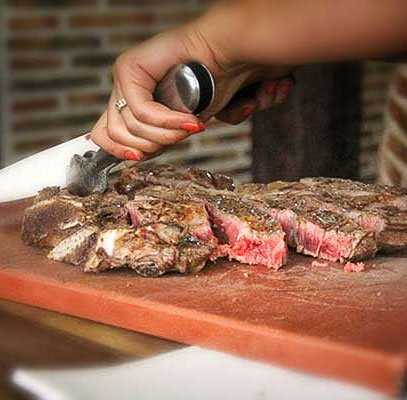
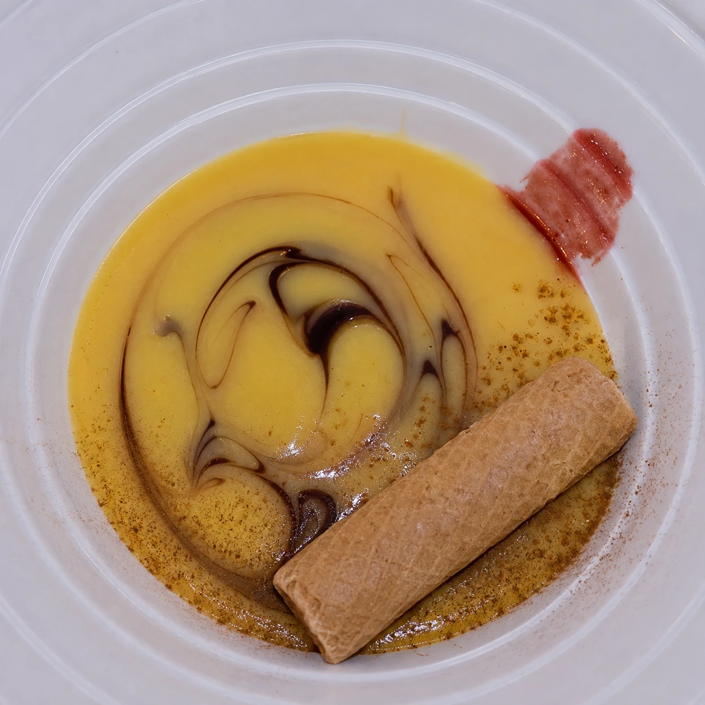
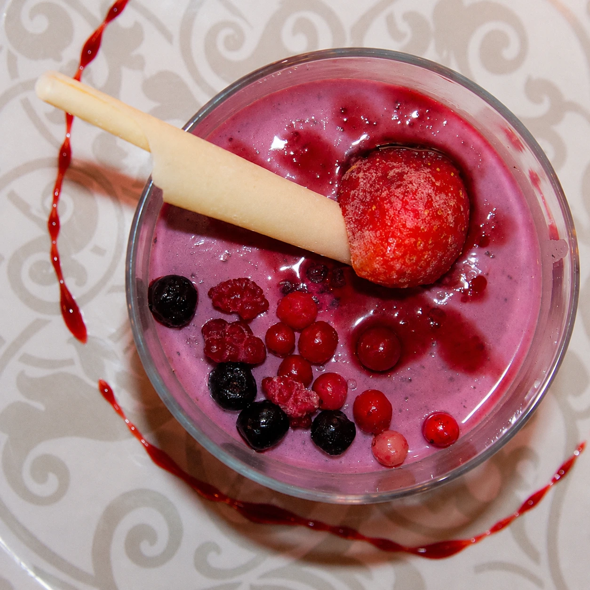
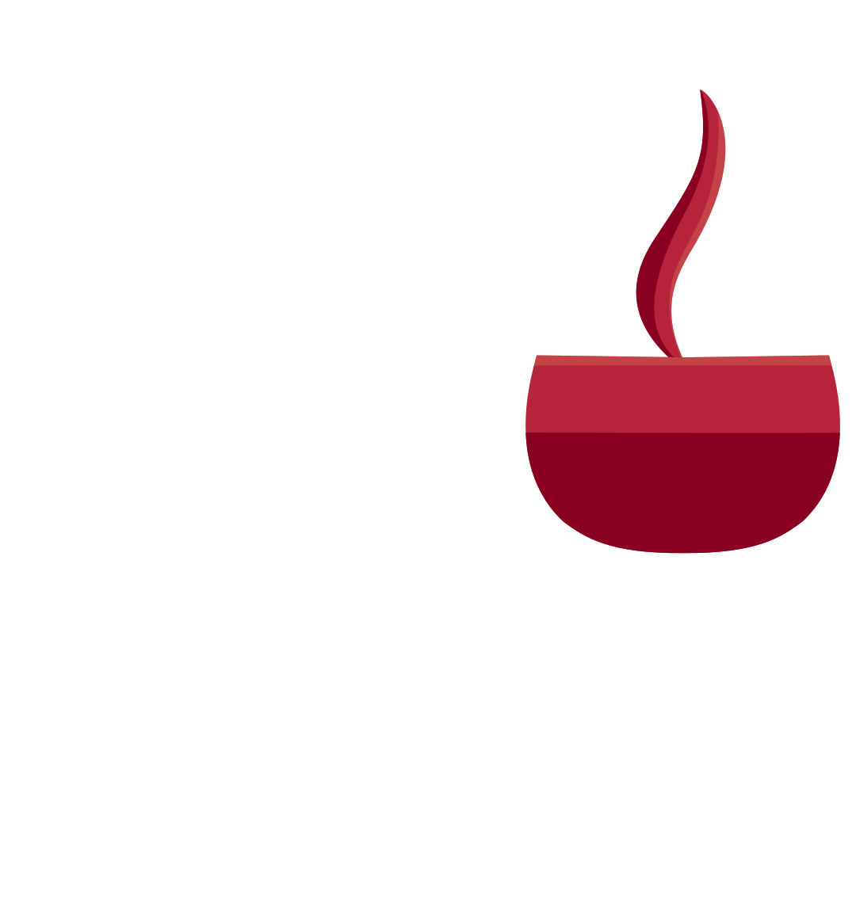

Une expérience culinaire
L’authentique agneau de lait de Lerma rôti au four à bois
La truffe noire aromatique
De délicieux champignons
Notre excellent boudin noir de Lerma
Les vins D.O. Arlanza
DÉCOUVREZ NOTRE CARTE
Cuisine traditionnelle castillane et produits de saison de la vallée de l’Arlanza. Agneau de lait rôti au four à bois, viandes de première qualité grillées et saveurs de notre terroir.





Carte
Asador Caracoles
AGNEAU DE LAIT RÔTI AU FOUR À BOIS
VIANDES GRILLÉES
PRODUITS DE SAISON
DÉCOUVREZ LES VINS DE NOTRE TERROIR
Lerma se trouve au cœur de la D.O. Arlanza, de plus en plus reconnue, dont les vins gagnent progressivement en notoriété. À quelques kilomètres seulement se trouve également l’une des appellations les plus réputées au monde : Ribera del Duero.

CARTE DES VINSNOTRE SÉLECTION DE VINS
- ARLANZA
- RIBERA DEL DUERO
- VINS DE CASTILLE-ET-LEÓN
- RIOJA
- ROSÉS
- BLANCS
- CAVAS & CHAMPAGNE
Les prix sont susceptibles de varier. Les prix indiqués au restaurant prévalent.